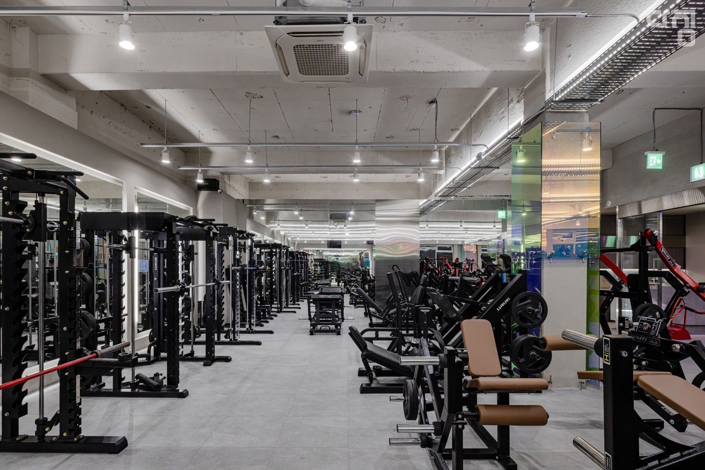
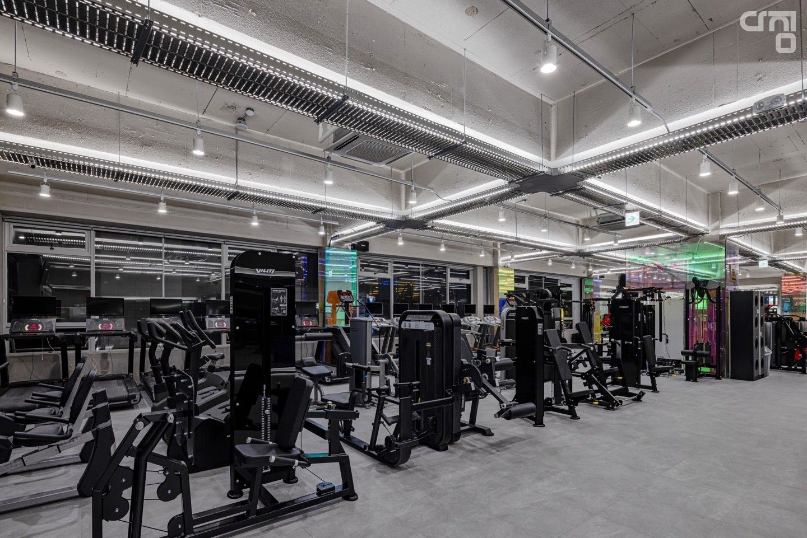

친절해요
운동이 낯선 순간에도 편하게 물어볼 수 있는 응대.
1986 FITNESS · JUNGSAN · 지상 300평
중산동에서 가장 오래 함께한 헬스장
처음 온 날의 친절함이 익숙한 인사로 이어지고,
넓고 정돈된 공간이 매일의 운동을 편하게 만듭니다.

6F · ABOVE GROUND300 PYEONG
24H생활 리듬대로
300평대 지상 공간
KEEPAY먹튀방지 안심매장
01 / WHY MEMBERS STAY
시설보다 먼저 기억되는 건 사람과 분위기입니다. 실제 방문자 리뷰에서 가장 자주 선택된 경험을 모았습니다.
운동이 낯선 순간에도 편하게 물어볼 수 있는 응대.
기구부터 라커룸까지 매일 다시 오기 좋은 관리.
기다림과 눈치보다 내 운동에 집중하는 구성.
서로의 운동을 방해하지 않는 여유로운 동선.
네이버 플레이스 방문자 리뷰 키워드 · 2026.09 확인
LONGEST
IN JUNGSAN
중산동 최장 운영의 경험과 KEEPAY 먹튀방지 안심매장 가입으로, 등록 이후까지 생각합니다.
02 / REAL SPACE
답답한 지하가 아닌 지상 6층. 운동의 시작부터 마무리까지 실제 중산점 공간으로 확인하세요.

넓은 동선 위로 다양한 머신을 여유롭게 배치했습니다.
03 / MEMBER EXPERIENCE
“내향적인데도 트레이너와 직원분들이랑 말 트고 재밌게 다니는 중이에요. 이제는 헬스장이 많이 편해졌어요.”
네이버 방문자 리뷰에서 발췌·축약
RETURN예전에 다니다가
다시 시작한 회원
12 MONTHS긴 호흡으로
등록한 회원
AFTER HOURS퇴근 후에도,
주말 새벽에도
04 / COACHING TEAM
현재 공개 등록된 세 명의 트레이너와 상담할 수 있습니다.
05 / LIVE FROM NAVER
회원권 안내와 이벤트, 새로 올라온 업체 사진을 자동으로 확인합니다.
최신 플레이스 콘텐츠를 불러오는 중입니다.
06 / VISIT
큰 사거리 코너의 BYC·메가커피 건물입니다. 직접 올라와 공간과 분위기를 확인해보세요.